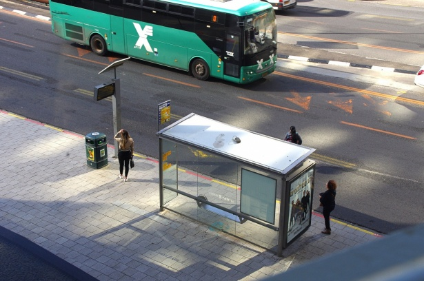
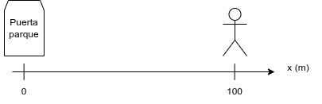
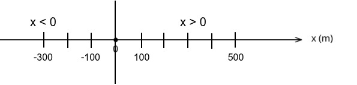
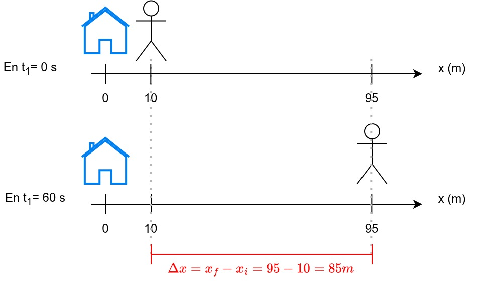
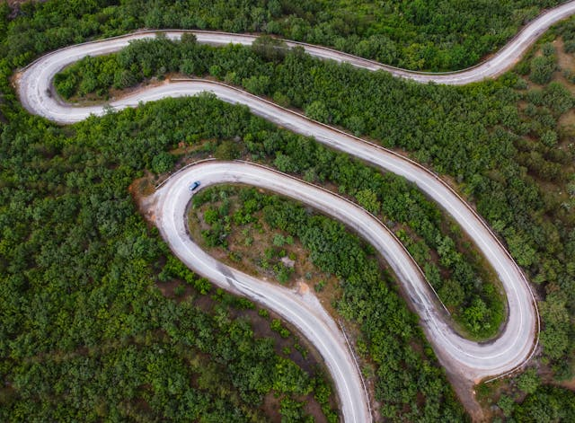
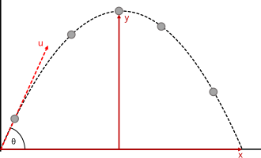
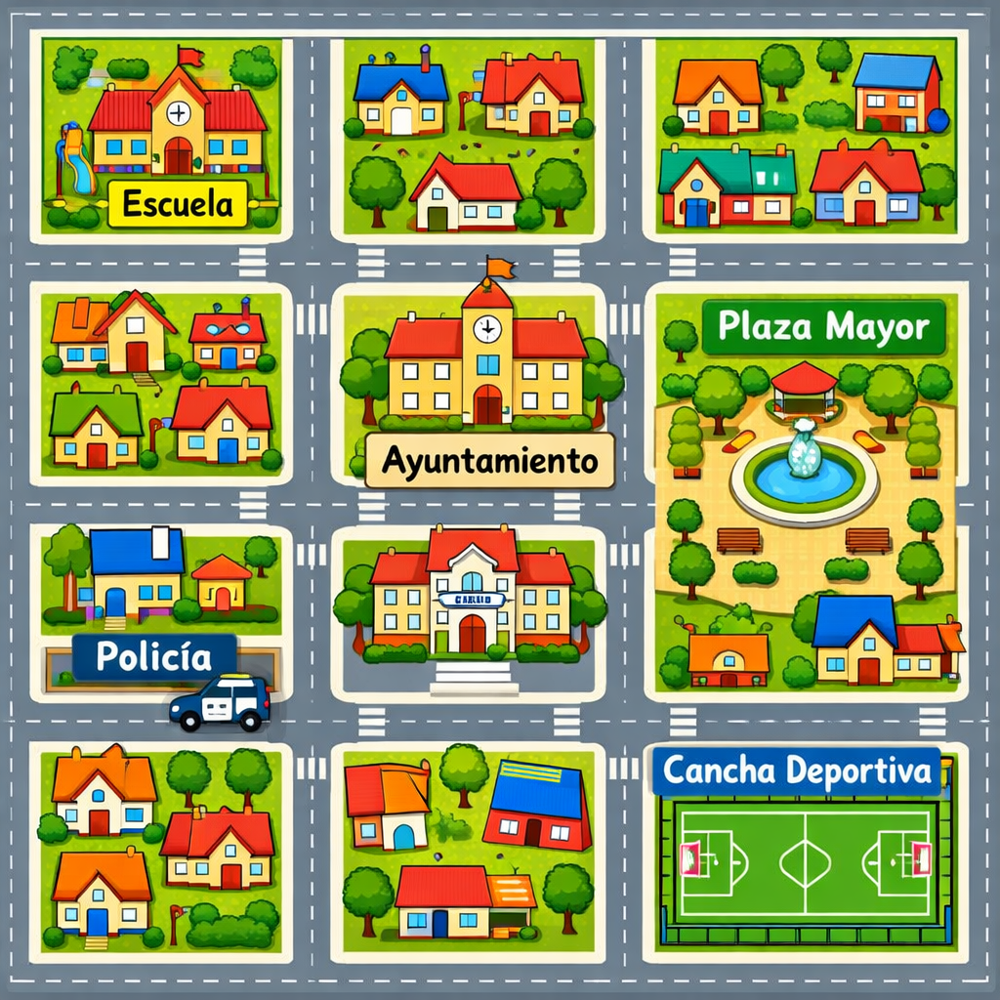
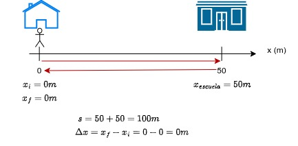

Movimiento y cinemática. Posición.
1 Introducción
La cinemática es la parte de la física que estudia cómo se mueven los objetos, sin preocuparse de por qué se mueven.
Ejemplo: cuando vas en bicicleta, puedes fijarte en dónde estás, qué camino sigues, lo rápido que vas o si estás acelerando. Todo eso lo estudia la cinemática.
2 El movimiento es relativo
¿Qué significa esto? Que una persona sentada a tu lado en el autobús está quieta desde tu punto de vista. Pero desde el punto de vista de una persona sentada en la parada del autobús, verá a esa persona moverse.
El movimiento siempre depende del observador: algo se mueve cuando cambia su posición respecto a un punto que nosotros decidimos (en este caso respecto al observador). Es punto es el origen del sistema de referencia y forma parte del punto de referencia.

2.1 Sistema de referencia y posición
Para poder entender y describir los movimientos necesitamos algunos elementos fundamentales.
Imagina que estás hablando con un amigo para que te encuentre un un parque y le dices que estás a cien metros de la puerta de entrada. Con esa información le has dado un punto que actúa como origen del sistema de referencia (“la entrada”) y la posición (“a cien metros de esa entrada”).

- Sistema de referencia: conjunto de ejes y un punto, que es el origen, desde el que medimos posiciones.
- En cada problema elegiremos un sistema de referencia y su origen. En general estos se considerarán fijos e inmóviles durante todo el problema.
- Posición (x): lugar donde está un objeto respecto al origen del sistema de referencia en cada instante. Unidad: metro (m).
2.2 Criterio de signos para la posición
Para poder describir el movimiento es importante tener claro los signos de la posición.
- Si nos movemos hacia la derecha, la posición definida por \(x\) irá creciendo hacia valores más positivos.
- Si nos movemos hacia la izquierda, la \(x\) irá teniendo valores más pequeños hasta el cero. Si seguimos moviéndonos hacia la izquierda, la \(x\) irá teniendo valores más negativos.

3 ¿Qué es el movimiento entonces?
Diremos que un “cuerpo” está en movimiento cuando cambia su posición (\('x'\))respecto al origen del sistema de referencia a lo largo del tiempo (\(t\)).

En la imagen anterior se observa cómo en el instante \(t1\) la persona está en una posición \(x=10m\) y después de que el tiempo haya avanzado, esa persona está en la posición \(x=95m\).
- Ha recorrido una distancia de \(d = 95m-10m = 85m\).
- Coincide con el desplazamiento (que se calcula como la posición final \(x_f\) menos la posición inicial \(x_i\)): \(\Delta x = x_f - x_i = 95 - 10 = 85m\).
- Lo ha hecho en el siguiente tiempo: \(\Delta t = t_2-t_1 = 60s - 0s = 60s\).
- Su velocidad se puede calcular así: \[
v = \dfrac{\Delta x}{\Delta t} = \dfrac{85m}{60s} \approx 1,42 \dfrac{m}{s}
\]
3.1 Trayectoria
Trayectoria: es el camino que sigue un objeto, es decir, el conjunto de sus posiciones a medida que pasa el tiempo.
Por ejemplo: los puntos por donde pasaría un ciclista siguiendo la carretera del dibujo.

Las trayectorias puden ser rectas (una pelota que dejamos caer o un coche en una carretera recta) o curvas como la imagen anterior o el tiro de una pelota a canasta.

Este curso solo vamos a considerar trayectorias rectas. Si la trayectoria va por diferentes calles, romperemos la trayectoria final en diferentes segmentos rectos.
3.2 Ejercicios
- Define trayectoria con tus palabras.
- ¿Puede cambiar la posición sin cambiar la trayectoria?
- Pon un ejemplo de trayectoria curva.
- ¿Cómo dibujarías la trayectoria de una persona que quiere ir desde la Escuela a la Cancha Deportiva?

- Camino que sigue un objeto.
- Sí, si se mueve dentro del mismo tipo de trayectoria.
- Una pelota lanzada.
- Este ejercicio tiene diferentes soluciones. Lo interesante es simplemente pensar que ha de pasar por numerosas calles.
4 Espacio recorrido y desplazamiento
Espacio recorrido (s): es la distancia total recorrida por un cuerpo en su movimiento. Unidad: metro (m).
Desplazamiento(\(\Delta x\)): es la distancia entre la posición inicial (\(x_i\)) y la posición final (\(x_f\)), se mide también en metros (m) y se calcula como: \(\Delta x = x_f - x_i\)
Cuando vamos en línea recta y no volvemos hacia atrás el espacio recorrido coincide con el desplazamiento.
Pero cuando vamos a un sitio y volvemos, estos valores pueden no coincidir. Por ejemplo: hay veces que podemos tener que el espacio recorrido es de 100 m, pero el desplazamiento es 0. ¿Cuándo? Cuando vamos de nuestra casa al instituto que está a 50 m y luego volvemos.

4.1 Ejercicios
- ¿Es igual espacio recorrido que desplazamiento?
- Calcula el espacio recorrido vas de tu casa al instituto (200 m), de allí al supermercado (otros 60 m en el mismo sentido) y del supermercado a casa (260 m del supermercado a casa en sentido contrario).
- Calcula ahora el desplazamiento yendo a los sitios anteriores y considerando que tu casa es el punto inicial y final.
- ¿Cuál sería el desplazamiento si fueras de casa al instituto y de allí al supermercado sin volver a casa?
- ¿Y el espacio recorrido?
- ¿Puede ser cero el espacio recorrido?
- No.
- \(s=200 + 60 + 260 = 520 m\).
- \(\Delta x = x_f - x_i = 0 - 0 = 0 m\).
- \(\Delta x = x_f - x_i = (200+60) - 0 = 260 m\).
- \(s=200 + 60 = 260 m\).
- Sí, solo cuando no hay movimiento, es decir, si no te desplazas.
5 Recursos adicionales
English video Motion in one dimension